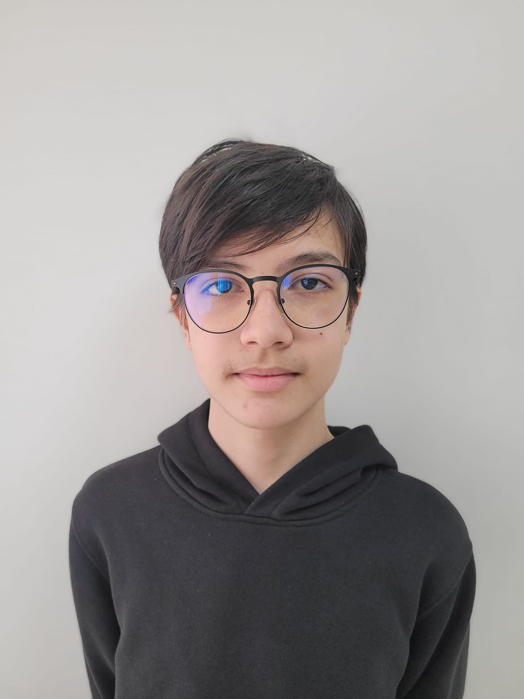
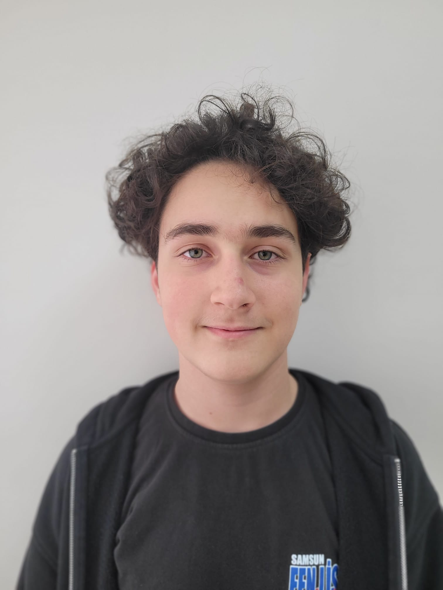
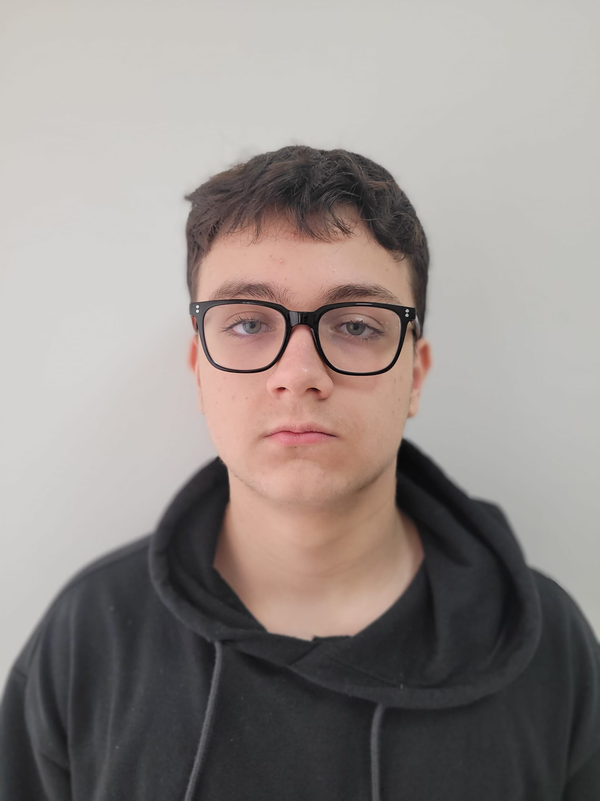

Kalabalık okul ortamlarında manuel ateş ve maske kontrolü hem zaman kaybına hem de yüksek hata payına yol açar. Hastalık belirtisi gösteren öğrencilerin takibi ve idareye raporlanmasındaki gecikmeler salgın riskini artırır.
IoT ve Yapay Zeka destekli otonom terminalimiz; RFID kimlik doğrulama, temassız ateş ölçümü ve anlık maske denetimi yapar. Kritik durumlarda Telegram üzerinden anlık bildirim göndererek idari karar destek mekanizmasını hızlandırır.
Sistem sadece ölçüm yapmaz; ateş, maske ve kimlik verilerini eşleştirerek geçiş izni kararını kendisi verir.
Riskli bir geçiş gerçekleştiği anda sınıf öğretmenine ve idareye doğrudan mobil bildirim gönderilir.
Belirlenen vaka eşiği aşıldığında, salgın yayılmadan idareyi uyararak sınıfsal önlemler alınmasını sağlar.
Görüntü işleme teknolojisi ile sadece maske kullanımını doğrular ve doğru önlemi alan öğrencilerin geçişine izin verir.
Yüksek ateşli öğrencileri otomatik olarak ayrı bir "Sağlık Girişi"ne yönlendirerek okul girişindeki yoğunluğu önler.
Arduino UNO & RFID & IR Entegrasyonu

Yazılım & 3D Tasarım
Beceriler: C, C++, Python, Spider yazılım dilleri ve Fusion 360 ile 3D tasarım.
Projeler: Reflex ölçer mobil uygulaması ve Bluetooth kontrollü sistemler.
Hedef: Yazılım Mühendisliği alanında oyun ve mobil uygulama geliştirme.

Elektronik & Yazılım
Beceriler: Arduino programlama ve Visual Studio ile uygulama geliştirme.
Projeler: Akıllı trafik ışığı ve araç hareket sistemleri deneyimi.
Hedef: Elektrik-Elektronik veya Yazılım Mühendisliği; IoT ve gömülü sistemler.

Elektronik & Donanım
Beceriler: KiCad ile PCB tasarımı, Fusion 360 mekanik parça modelleme.
Projeler: Arduino tabanlı programlanabilir Macropad (Kısayol Klavyesi).
Hedef: Elektrik-Elektronik Mühendisliği; robotik teknolojileri ve IoT.
Garip Zeycan Yıldırım Fen Lisesi - Samsun